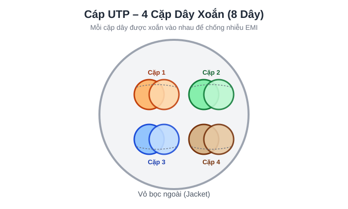
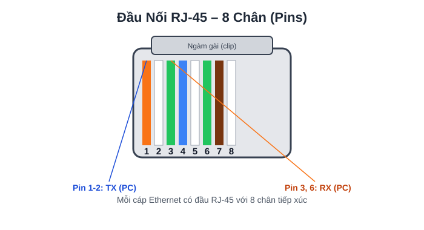
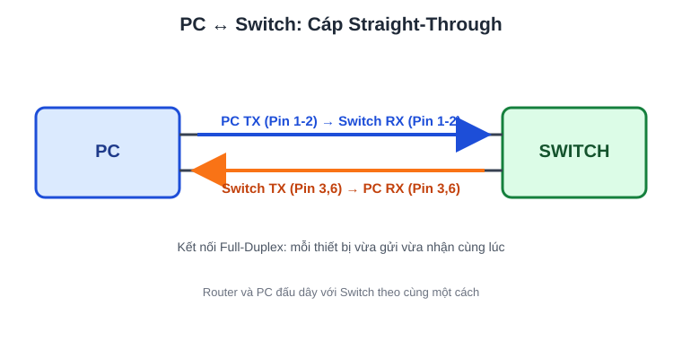
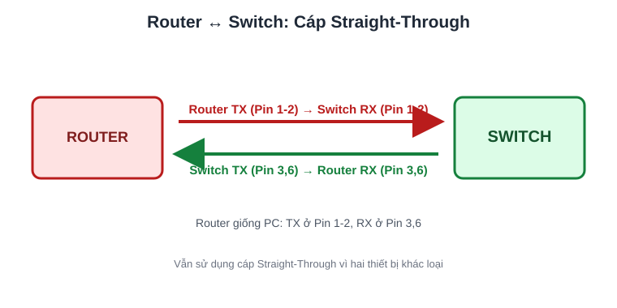
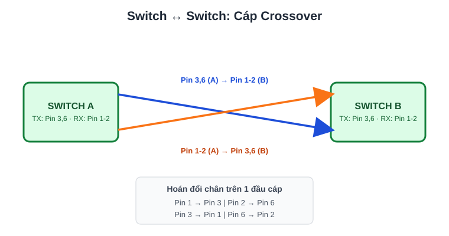
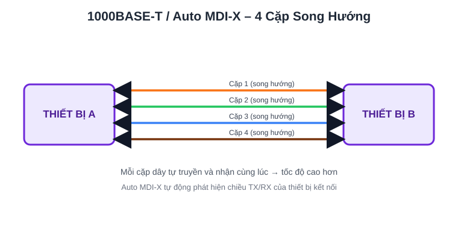
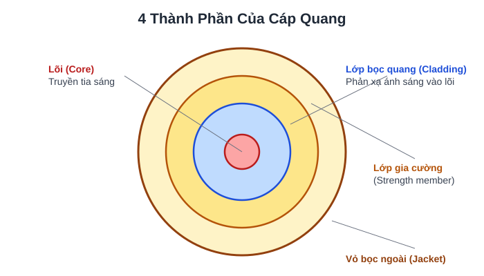
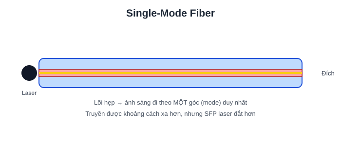
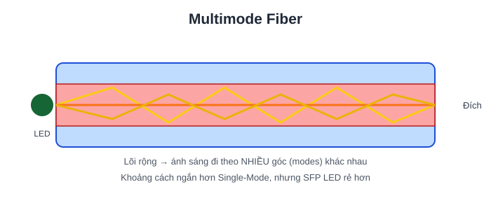

2. INTERFACES AND CABLES¶
SWITCH cung cấp nhiều CỔNG (PORTS) để kết nối (thường là 24 cổng).
Các cổng này thường là cổng RJ-45 (Registered Jack).
ETHERNET LÀ GÌ?¶
- Ethernet là một tập hợp các giao thức/tiêu chuẩn mạng.
Tại sao chúng ta cần các giao thức và tiêu chuẩn mạng?
- Cung cấp tiêu chuẩn truyền thông chung trên các mạng.
- Cung cấp tiêu chuẩn phần cứng chung để cho phép kết nối giữa các thiết bị.
Kết nối giữa các thiết bị hoạt động ở một TỐC ĐỘ cố định.
Các tốc độ này được đo bằng "bit trên giây" (bps).
Một bit có giá trị "0" hoặc "1". Một byte = 8 bit (các số 0 và 1).
| Kích thước | Số Bit |
|---|---|
| 1 kilobit (Kb) | 1.000 |
| 1 megabit (Mb) | 1.000.000 |
| 1 gigabit (Gb) | 1.000.000.000 |
| 1 terabit (Tb) | 1.000.000.000.000 |
Tiêu chuẩn Ethernet:
- Được định nghĩa trong tiêu chuẩn IEEE 802.3 vào năm 1983.
- IEEE = Institute of Electrical and Electronics Engineers (Viện Kỹ sư Điện và Điện tử).
TIÊU CHUẨN ETHERNET (CÁP ĐỒNG)¶
| Tốc độ | Tên thường gọi | Tiêu chuẩn | Loại cáp | Khoảng cách truyền tối đa |
|---|---|---|---|---|
| 10 Mbps | Ethernet | 802.3i | 10BASE-T | Tối đa 100m |
| 100 Mbps | Fast Ethernet | 802.3u | 100BASE-T | Tối đa 100m |
| 1 Gbps | Gigabit Ethernet | 802.3ab | 1000BASE-T | Tối đa 100m |
| 10 Gbps | 10 Gigabit Ethernet | 802.3an | 10GBASE-T | Tối đa 100m |
- BASE = Baseband Signaling (Tín hiệu băng gốc).
- T = Twisted Pair (Cặp dây xoắn).
Hầu hết Ethernet sử dụng cáp đồng.
UTP (Unshielded Twisted Pair) = Cặp dây xoắn không vỏ chống nhiễu (không có lớp kim loại chống nhiễu). Việc xoắn dây giúp chống lại EMI (Electromagnetic Interference – Nhiễu điện từ).
Hầu hết sử dụng 8 dây (4 cặp), tuy nhiên:
- 10/100BASE-T chỉ dùng 2 cặp (4 dây).

CÁC THIẾT BỊ GIAO TIẾP QUA KẾT NỐI NHƯ THẾ NÀO?¶
Mỗi cáp Ethernet có đầu cắm RJ-45 với 8 chân (pins) ở hai đầu.

- PC truyền (TX) dữ liệu trên chân #1-2.
- Switch nhận (RX) dữ liệu trên chân #1-2.
- PC nhận (RX) dữ liệu trên chân #3, 6.
- Switch truyền (TX) dữ liệu trên chân #3, 6.
Điều này cho phép truyền dữ liệu Song công (Full-Duplex).

NẾU ROUTER / SWITCH KẾT NỐI VỚI NHAU?¶

- Router truyền (TX) dữ liệu trên chân #1-2.
- Router nhận (RX) dữ liệu trên chân #3, 6.
- Switch truyền (TX) dữ liệu trên chân #3, 6.
- Switch nhận (RX) dữ liệu trên chân #1-2.
Router và PC kết nối với Switch theo cùng một cách.
Loại cáp dùng để kết nối được gọi là cáp "Straight-Through" (Cáp thẳng).
NẾU MUỐN KẾT NỐI HAI THIẾT BỊ CÙNG LOẠI VỚI NHAU?¶
KHÔNG thể dùng cáp "Straight-Through". PHẢI dùng cáp "Crossover" (Cáp chéo).
Loại cáp này hoán đổi các chân ở một đầu để cho phép kết nối hoạt động.

| LOẠI THIẾT BỊ | CHÂN TRUYỀN (TX) | CHÂN NHẬN (RX) |
|---|---|---|
| ROUTER | 1 và 2 | 3 và 6 |
| FIREWALL | 1 và 2 | 3 và 6 |
| PC | 1 và 2 | 3 và 6 |
| SWITCH | 3 và 6 | 1 và 2 |
Hầu hết thiết bị hiện đại đều có AUTO MDI-X, tự động phát hiện chân mà thiết bị kế bên đang dùng để truyền và điều chỉnh chân nhận cho phù hợp.
1000BASE-T / 10GBASE-T = 4 cặp (8 dây).
Mỗi cặp dây là song hướng (bidirectional) nên có thể truyền/nhận nhanh hơn nhiều so với 10/100BASE-T.

KẾT NỐI CÁP QUANG (FIBER-OPTIC)¶
- Được định nghĩa trong tiêu chuẩn IEEE 802.3ae.
SFP Transceiver (Small Form-Factor Pluggable) cho phép cáp quang kết nối vào switch/router.
- Có các sợi cáp riêng biệt để truyền / nhận.
Cáp quang gồm 4 thành phần.

Có HAI loại cáp quang.
Single-Mode (Đơn mode)¶

- Lõi hẹp hơn multimode.
- Ánh sáng đi vào theo MỘT góc (mode) duy nhất từ bộ phát dùng laser.
- Cho phép cáp dài hơn cả UTP và cáp multimode.
- Đắt hơn cáp multimode (do bộ phát SFP dùng laser đắt hơn).
Multimode (Đa mode)¶

- Lõi rộng hơn Single-mode.
- Cho phép nhiều góc (modes) ánh sáng đi vào lõi.
- Cho phép cáp dài hơn UTP nhưng ngắn hơn single-mode.
- Rẻ hơn single-mode (do bộ phát SFP dùng LED rẻ hơn).
TIÊU CHUẨN CÁP QUANG¶
| Tốc độ | Tiêu chuẩn | Tốc độ kết nối | Hỗ trợ Mode | Khoảng cách truyền tối đa |
|---|---|---|---|---|
| 1000BASE-LX | 802.3z | 1 Gbps | Multimode / Single | 550m (Multi) / 5km (Single) |
| 10GBASE-SR | 802.3ae | 10 Gbps | Multimode | 400m |
| 10GBASE-LR | 802.3ae | 10 Gbps | Single | 10km |
| 10GBASE-ER | 802.3ae | 10 Gbps | Single | 30km |
SO SÁNH UTP VÀ CÁP QUANG¶
UTP:
- Chi phí thấp hơn cáp quang.
- Khoảng cách tối đa ngắn hơn cáp quang (~100m).
- Dễ bị ảnh hưởng bởi EMI (Nhiễu điện từ).
- Cổng RJ-45 dùng với UTP rẻ hơn cổng SFP.
- Phát ra (rò rỉ) tín hiệu yếu ra bên ngoài cáp, có thể bị sao chép (rủi ro bảo mật).
Cáp quang:
- Chi phí cao hơn UTP.
- Khoảng cách tối đa dài hơn UTP.
- Không bị ảnh hưởng bởi EMI.
- Cổng SFP đắt hơn cổng RJ-45 (single-mode đắt hơn multimode).
- Không phát ra tín hiệu ra ngoài cáp (không có rủi ro bảo mật).